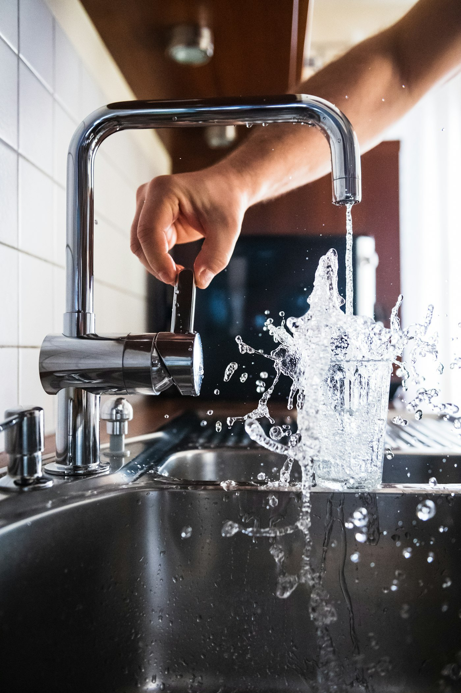

Hot Water Repairs, Upgrades & Heat Pumps
Never endure a cold shower. We diagnose, repair, and install leading Australian electric, continuous gas, solar, and energy-efficient heat pump hot water systems.
Restore Reliable Hot Water to Your Home Today
Most hot water tanks have an operational lifespan of 8 to 12 years before internal enamel linings degrade or heating elements burn out. When your system starts leaking brown rusty water or tripping your circuit breaker, immediate trade attention is essential.
At Waterworks Plumbing Qld, we carry factory-spec replacement parts, high-durability sacrificial anodes, and certified 50-degree tempering valves. If your cylinder has suffered catastrophic failure, we install and commission replacement systems on the exact same day.
- Tempering Valve Compliance: Calibrated to deliver safe 50°C hot water to bathroom outlets, preventing scalding.
- QBCC Form 4 Lodgement: Full statutory certification submitted to local Queensland councils for compliance.
- Old Tank Disposal: We disconnect and recycle your defunct tank, leaving the site clean and tidy.

Choosing the Right Hot Water Technology
Tailored recommendations based on your household size, solar PV capacity, and daily consumption.
Modern Heat Pump Cylinders
Cut hot water electrical consumption by up to 70% by extracting ambient heat from Queensland's warm sub-tropical air, perfectly synced with rooftop solar PV timers.
Electric Storage Units
Heavy-duty vitreous enamel and stainless steel cylinders from Rheem, Dux, and AquaMax (80L to 400L) built for high durability and consistent mains water pressure.
Continuous Flow Gas Units
Compact, wall-mounted instantaneous gas units from Rinnai and Bosch that heat water only as you turn on the tap, delivering endless hot water with zero standby energy loss.
Installed to Factory Warranty Specifications
We supply and install all major brands trusted across Australian homes: Rheem, Rinnai, Dux, Vulcan, AquaMax, Thermann, and Bosch.